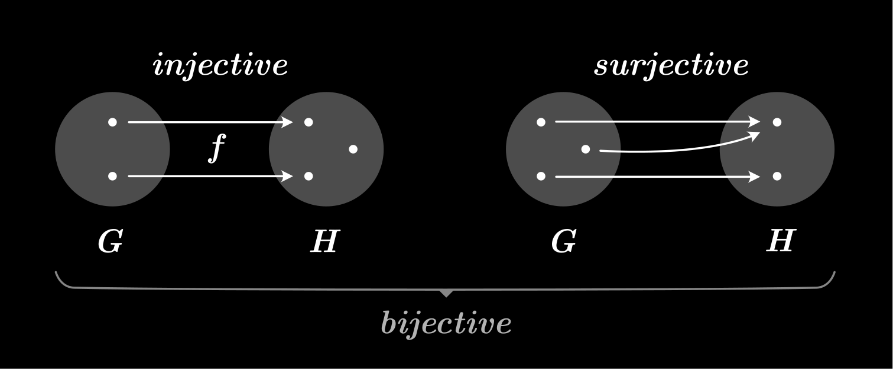
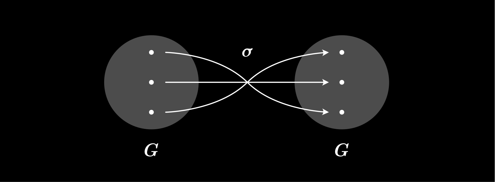

by Lukas Wrana
A Group is an ordered pair $(G, *)$ of a set $G$ and a binary operator $$*:\begin{cases}G\times G\to G\\(a,b)\mapsto a * b\end{cases}$$ that satisfies the group axioms:
$\forall a,b,c\in G:\quad (a*b)*c=a*(b*c)$
$\exists e\in G$ such that $\forall a\in G:\quad a*e=e*a=a$
$\forall g\in G\space\exists a^{-1}\in G:\quad a*a^{-1}=a^{-1}*a=e$
Given two groups, $(G, *)$ and $(H,\cdot)$, a group homomorphism from $(G, *)$ to $(H, \cdot)$ is a function $$f:\space G \to H$$ such that $\forall u, v\in G$ it holds that $$f(u*v)=f(u)\cdot f(v)$$
From this property, we can also deduce that
An automorphism is a bijective homomorphism of an object into itself.
Given a group $(G, *)$, a group automorphism $\sigma$ is an involution, if $$\sigma (\sigma (x)) = x \qquad \forall x\in G$$
An involution $\sigma$ on a group $(G, *)$ has no non-trivial-fixpoints if the identity element $e\in G$ is the only fixpoint of $\sigma$: $$\forall g\in G:\quad(\space\sigma(g)=g\Rightarrow g=e\space)$$
We call $e\in G$ a trivial fixpoint of $\sigma$.
Every group $(G, *)$ has a trivial involution, namely the identity $\text{id}$.
Let $(G, *)$ be an arbitrary Group. For every $x\in G$: $$x = \text{id}(x) = \text{id}(\text{id}(x))$$ $\Rightarrow \text{id}$ is an involution.
$\square$Real negation $$-:\begin{cases}\R \rightarrow \R,\\x\mapsto -x \end{cases}$$is an involution on $(\R, +)$.
For $x,y\in\R$: $$-(x + y) = -x + (-y)$$ and $$x = -(-x) = -(-(x))$$ ... $\Rightarrow$ real negation is an involution on $(\R, +)$.
$\square$Let $(G, *)$ be a finite group. If an involution with no non-trivial fixpoints on $(G, *)$ exists, then $*$ is commutative. Thus making $(G, *)$ an abelian group.
Let $(G, *)$ be a finite group and $\sigma$ be an involution on $G$. If $\sigma$ has no non-trivial fixpoints, then: $$\forall g\in G\space\exists x\in G:\quad g=x^{-1}* \sigma(x)$$
In essence, we want to show surjectivity of a function:$$x\mapsto x^{-1} * \sigma(x)$$ Because $G$ is finite, we can conclude surjectivity by injectivity.
So, lets prove injectivity...
Suppose $x, y\in G$ with $x^{-1} * \sigma (x) = y^{-1} * \sigma(y)$. $$\begin{align}x &= \sigma(\sigma(x))\\ &= \sigma (x* x^{-1}* \sigma(x))\\ &= \sigma (x* y^{-1}* \sigma(y))\\ &= \sigma (x)*\sigma(y^{-1})*\sigma (\sigma (y))\\ &= \sigma (x)*\sigma(y^{-1})* y \end{align}$$
$$\begin{align}\Rightarrow x* y^{-1}&=\sigma (x)*\sigma(y^{-1})\\ &=\sigma(x* y^{-1})\end{align}$$
We have no non-trivial fixpoints, so $x* y^{-1}$ has to be the trivial fixpoint:$$\Rightarrow x* y^{-1} = e\\\Leftrightarrow\qquad\space x = y$$
$\Rightarrow x\mapsto x^{-1}*\sigma (x)$ is injective.
Since $G$ is finite, we can conclude that $x\mapsto x^{-1}*\sigma (x)$ is also surjective on $G$. $$\Rightarrow \forall g\in G\space\exists x\in G:\quad g=x^{-1}* \sigma(x)$$
$\square$Let $(G, *)$ be a finite group and $\sigma$ be an involution on $G$. If $\sigma$ has no non-trivial fixpoints, then: $$\forall g\in G:\quad \sigma(g)=g$$
In the previous Lemma, we showed that $$\forall g\in G\space\exists x\in G:\quad g=x^{-1}* \sigma(x)$$ We can expand on that result: $$ \begin{align}\Rightarrow \sigma(g)&=\sigma(x^{-1}*\sigma(x))\\ &=\sigma(x^{-1})*\sigma(\sigma(x))\\ &=\sigma(x^{-1})* x\\ &=(\sigma(x))^{-1}* x\\ &=(x^{-1}*\sigma(x))^{-1}\\ &=g^{-1} \end{align}$$
$\square$Let $(G, *)$ be a finite group. If an involution with no non-trivial fixpoints on $(G, *)$ exists, then $*$ is commutative. Thus making $(G, *)$ an abelian group.
Let $a, b\in G$. $$\begin{align}a*b&=(a^{-1})^{-1}*(b^{-1})^{-1}\\ &=(b^{-1}*a^{-1})^{-1}\\ &=\sigma(b^{-1}*a^{-1})\\ &=\sigma(b^{-1})*\sigma(a^{-1})\\ &=b*a \end{align}$$ $\Rightarrow *$ is commutative, $(G, *)$ is abelian.
$\square$A free group $(F_S, *)$ over a given set $S$ consists of all words that can be build by elements of $S$ or their inverse.
Elements of $S$ are called generators. Two constructed words are considered different unless their equality follows from the group axioms.
Given any function $f$ from $S$ to a group $(G, *)$, there exists a unique homomorphism $$\phi:\quad F_S\mapsto G$$
We will look at a free group $(F_2, *)$ on two generators $\{a, b\}:$ $$e,\quad a*b,\quad a^{-1}*b*b,\quad a^{-1}*b*b*a*a*b^{-1}a,\quad ...$$
We can define an automorphism $s$ that swaps the generators over a free group $(F_2, *)$. $$s(x):= \begin{cases}a,\qquad\qquad\quad\text{if }\space x=b\\b,\qquad\qquad\quad\text{if }\space x=a\\s(u)*s(v),\quad\text{for }\space x=u*v,\quad u,v\in F_2 \end{cases}$$
$s(abba) = baab$ Note: $abba$ is short for $a * b * b * a.$
By it's construction, $s$ is a homorphism. It is therefore not difficult to show that $s$ is indeed an involution on $(F_2, *)$.
Let's assume that $x$ is a fixed point of $s$:$$s(x)=x$$
$x$ has to look the same, with $a$ and $b$ swapped. This can only be the case if $x$ is the empty word $e$, thus beeing a trivial fixed point.
By the very construction of any free group (on more than one generator), elements $a * b$ and $b * a$ are considered different, because there's no imposed property proving their equality.